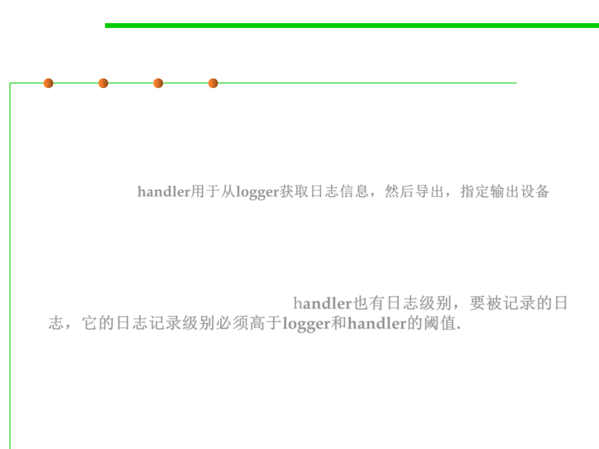

java.util.logging: Handler
7.4 Debugging
▪ Logging Handlers
– A handler object takes log messages from a logger and exports them. It
might for example, write them to a console or write them to a file, or send
them to a network logging service, or forward them to an OS log, or
whatever. handler用于从logger获取日志信息，然后导出，指定输出设备
– By default, loggers send records to a ConsoleHandler(which control what to
show in console) that prints them to the System.err stream.
▪ Like loggers, handlers have a logging level (also the 7 levels). For a
record to be logged, its logging level must be above the threshold of
both the logger and the handler. handler也有日志级别，要被记录的日
志，它的日志记录级别必须高于logger和handler的阈值.
▪ The log manager configuration file(by default,
the logging.properties file in JRE_HOME/lib) sets the logging level of
the default console handler as
– java.util.logging.ConsoleHandler.level=INFO